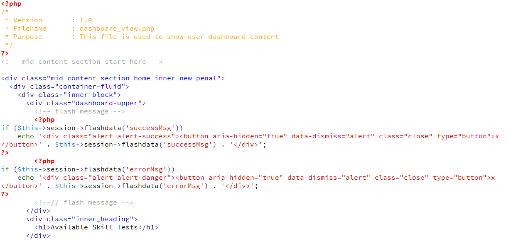

Online Test system is a php based web application to allows you to make powerful online tests and assessments in minutes. It provides a wide range of options to Administrator for creating a test including number of questions, total marks and total time according to his choice.
Tests are fully customizable which can be modified to any extent by Administrator. Its easy User-friendly interface makes it stand apart from other softwares in this category.
The notable features are, can accept plenty of questions and categories at a time, supports randomly selected questions, easy creation of multiple choice quizzes, result output both in natural score and rounded percentage at the end of each test and easy installation.
HTML Structure-
This theme is a fixed layout with one columns. All of the information within the main content area is nested within a div with an class of "mid_content_section".The general template structure is the same throughout the template. Here is the general structure.

CSS Files and Structure-
I'm using two CSS files in this theme. The first one is a generic reset file. Many browser interpret the default behavior of html elements differently. By using a general reset CSS file, we can work round this. This file also contains some general styling, such as anchor tag colors, font-sizes, etc. Keep in mind, that these values might be overridden somewhere else in the file.
Front end included files:
1. assets/css/style.css
2. assets/css/reset.css
/* === Header Start here === */
some code
/* === Header End here === */
/* === Body Start here === */
some code
/* === Body End here === */
/* === Footer CSS Start === */
some code
/* === Footer CSS End === */
etc.
Everything is same for admin section also. Just 2 more css files are included for datepicker and dropdown.
Back end included files:
1. assets/css/admin-reset.css
2. assets/css/admin-style.css
3. assets/css/datepicker.css
4. assets/css/chosen.css
If you would like to edit a specific section of the site, simply find the appropriate label in the CSS file, and then scroll down until you find the appropriate style that needs to be edited.
JavaScript-
Below are the included javascript files.
1. assets/js/jquery1.9.js: jQuery is a fast, small, and feature-rich JavaScript library.
2. assets/js/jquery.validate.js: This jQuery plugin makes simple clientside form validation easy, whilst still offering plenty of customization options.
3. assets/js/bootstrap.js: Bootstrap is the most popular HTML, CSS, and JS framework for developing responsive, mobile first projects on the web.
4. assets/js/jquery.dataTables.js: It add advanced interaction controls to any HTML table.
5. plugin/Jqgrid: jqGrid is an Ajax-enabled jQuery plugin that provides a solution for representing tabular data on the web.
6. plugin/summernote: Its WYSIWYG editor on bootstrap.
Images-
Template images files: assets/images/ directory
Uploads -
Questions files uploaded in: uploads/documents/ directory
PHP -
Build up on powerful codeigniter php framework. Follows MVC model.
For more info on codeigniter , go to: http://codeigniter.com/user_guide/
Included files:
Configuration files: application/config/config.php
Constant files: application/config/config.php
User controller files: application/controllers/ directory
Administrator controller files: application/controllers/admin/ directory
User model files: application/models/ directory
Administrator model files: application/models/admin/ directory
User view files: application/views directory
Administrator view files: application/views/admin/ directory
Home php controller: application/controllers/home.php
Login php controller: application/controllers/login.php
Test php controller: application/controllers/skilltest.php
Report php controller: application/controllers/report.php
Administrator's Settings php controller: application/controllers/admin/settings.php
Administrator's Users php controller: application/controllers/admin/user.php
Administrator's Test php controller: application/controllers/admin/usertest.php